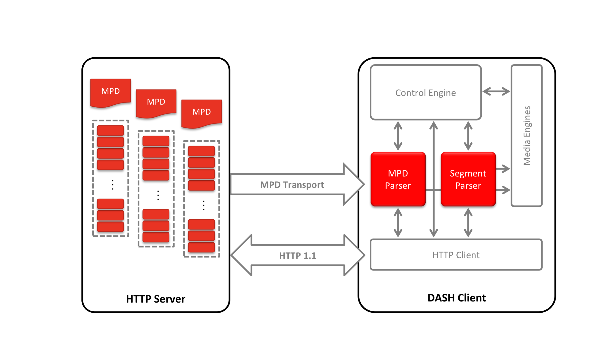
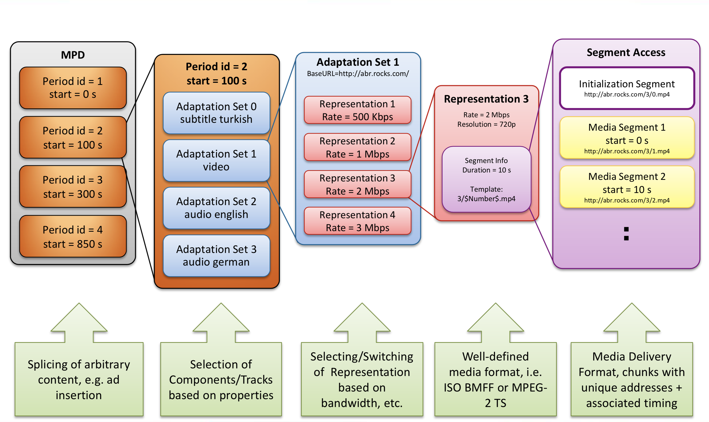

An Introduction to
Dash
(Dynamic Adaptive Streaming over HTTP)
Sepehr Sabour @pesehr
Parham Alvani @1995parham
Global Mobile Data Traffic

Global Mobile Data Traffic

Progressive Download
Client opens a TCP connection to a server as soon as enough data is available on the client, the client could eventually start with the decoding and rendering respectively.
- Bandwidth fluctuations
- Client cannot react
- Service interruption
User Frustration in Web-based Video
- Video not accessible
- Fragmentation
- Low quality of experience
- Expensive
Basic Approach: Adapt Video to Web rather than Changing the Web
- Streaming realized by continuous Short Downloads
- Downloads in small chunks to minimize bandwidth waste
- Enables minitoring consumption and tracking clients
- Adaption to Dynamic Condition and Device Capabilities
- Adapts to dynamic conditions anywhere on the path through the internet or home network
- Adapts to display resolution, CPU and memory resources of the client
- Facilitates any device, anywhere, anytime paradigm
Basic Approach: Adapt Video to Web rather than Changing the Web
- Improved Quality of Experience
- Enables faster start-up and seeking (compared to progressive download)
- Reduces and may eliminate rebuffering, skips, freezes and stutters
Basic Approach: Adapt Video to Web rather than Changing the Web
- Use of HTTP
- Well-understood naming/addressing approach
- Provides easy traversal for all kinds of middleboxes (e.g., NATs, firewalls)
- Enables cloud access, leverages existing HTTP caching inferastructure
- Enables client-driven deployments
- Enables resue of existing web technologies: authentication, authorization, etc
Goal
- Develop an international, standardized, efficient solution for HTTP-based streaming of MPEG media
Major Objectives and Design Principles
- Do the necessary, avoid the unnecessary
- Be lazzy: reuse what exists in terms of codecs, formats, content protection, protocols and signaling
- Be backward-compatible (as much as possible) to enable deployments aligned with existing proprietary technologies
- Be forward-looking to provide ability to include new codecs, media types, content protection, deployment models and other relevant metadata
Major Objectives and Design Principles
- Enable efficient deployments for different use cases (live, VoD, time-shifted, etc.)
- Focus on formats describing functional properties for adptive streaming, not on protocols or end-to-end systems or implementations
- Enable application standards and proprietary systems to create end-to-end systems based on DASH formats.
- Support deployments by conformance and reference software, implementation guidelines, etc.
Scope of MPEG DASH
DASH Data Model
- MPD Provide information to a client, where and when to find the data that composess A/V experience
- HTTP-URLs and MIME Types Provide the ability to offer a service on the cloud and HTTP-CDNs
- Periods Provide service provider the ability to combine/splice content with different properties into a single media presentation
- Adaptation Sets Provide service provider to enable the client/user selection of media content components based on user preferences, user interaction device profiles and capabilities, using conditions or other metadata
- Representations Provide ability to provide the same content with different encodings (bitrate, resolution, codecs)
- Descriptors Provide extensible syntax and semantics for describing Representation and Adaptation Set properties
- Segments and Subsegments Provide ability to access content in small pieces and do proper scheduling of access
- Playlist, Templates, Segment Index Provide ability for efficient signaling and deployment optimized addressing
- MPEG2-TS and ISO-BMFF Provide ability to enable reuse of existing encapsulation and parsing tools
Talk is cheap. Show me the code.